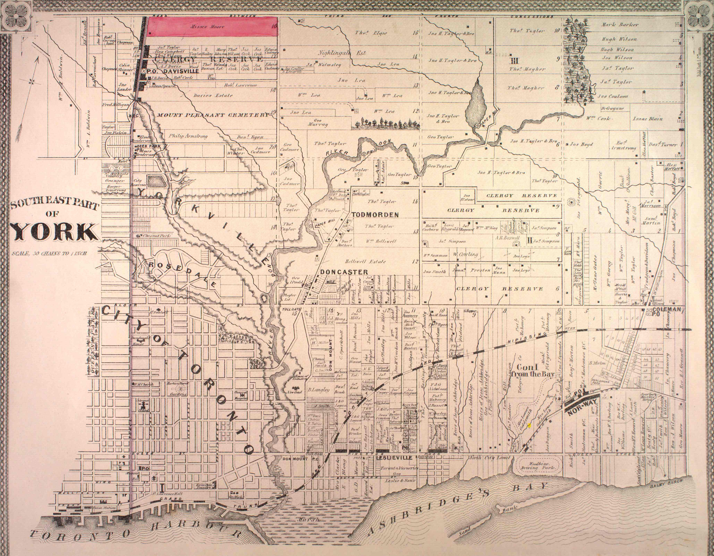
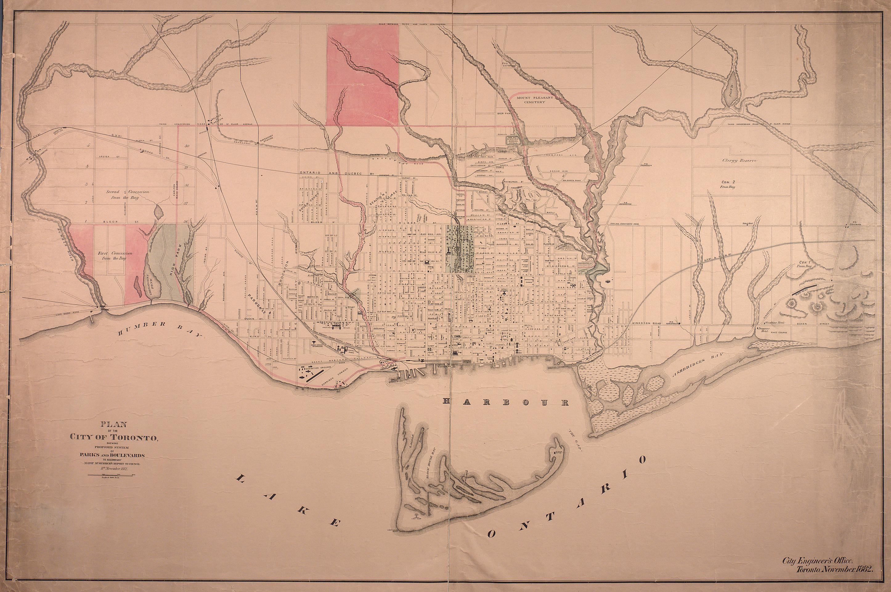
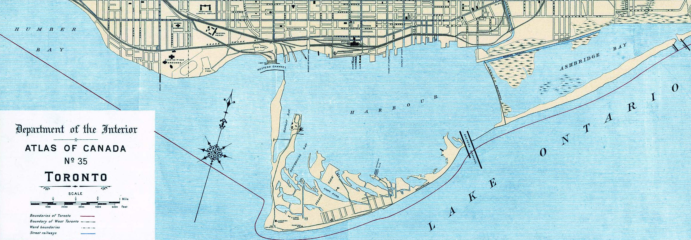
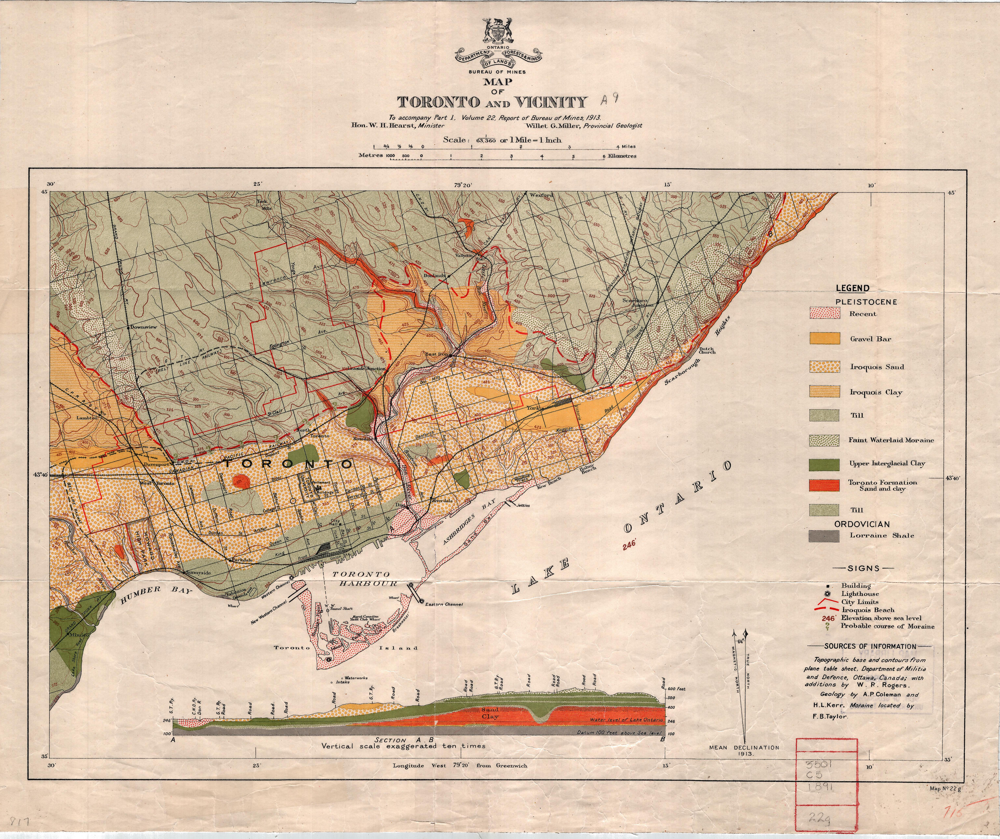
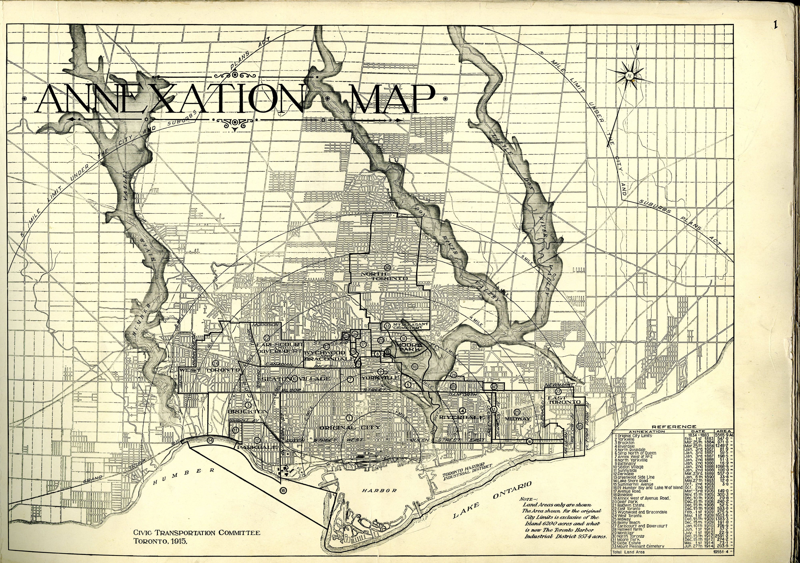
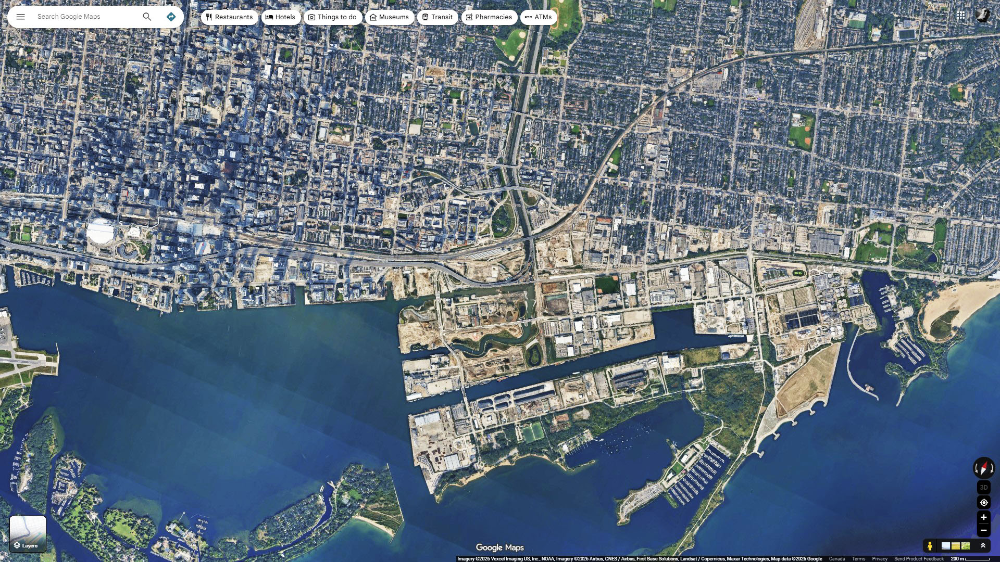

Keating Channel through time
The outlet of of the Don has changed with Biidaasige Park in 2026.
Around 1900 the outlet of the Don was a big issue. Ashbridges Bay - which used to mean the whole area of today's Portlands, boarded against the large lake by a long narrow sand bar - was a smelly swamp. The Bay was infilled, Keating Channel became the only Don outlet (the natural west-turn just to the north of Keating was developed over, and a proposed east leg of Keating, to Coxwell/Coatsworth Cut was abandoned).
Pollution decreased, Keating Channel was completed in the 1910's, and the Portlands became a commercial flatland. Today, it becomes a park & housing, still a shipping port, with new larger & more natural Don Outlet added, and boy-oh-boy, have we ever got better at building bridges than we were in say the 1890's.
This is a chronological stack of the mouth of the Don, starting at 1816 with a plan of Upper Canda harbourfront and ending with the Annexation areas in 1915. That's the first 100 years. Today's park, in 2026, is another 100 years on.
(Note also the header image, which is the raised Gardiner along Keating Channel in 2017. Wow it his hidious. It will be forever the legacy of Mayor John Tory that he chose the 'hybrid' Gardiner fix/replace project, which blocked the formation of a new at-grade housing/office development on this shoreline (to face the new development on Ookwemin Island) and wanted instead to rebuild, at great expense, this ugly raised highway - so the drivers would not have to descent to grade level one or two minutes sooner)
Around 1900 the outlet of the Don was a big issue. Ashbridges Bay - which used to mean the whole area of today's Portlands, boarded against the large lake by a long narrow sand bar - was a smelly swamp. The Bay was infilled, Keating Channel became the only Don outlet (the natural west-turn just to the north of Keating was developed over, and a proposed east leg of Keating, to Coxwell/Coatsworth Cut was abandoned).
Pollution decreased, Keating Channel was completed in the 1910's, and the Portlands became a commercial flatland. Today, it becomes a park & housing, still a shipping port, with new larger & more natural Don Outlet added, and boy-oh-boy, have we ever got better at building bridges than we were in say the 1890's.
This is a chronological stack of the mouth of the Don, starting at 1816 with a plan of Upper Canda harbourfront and ending with the Annexation areas in 1915. That's the first 100 years. Today's park, in 2026, is another 100 years on.
(Note also the header image, which is the raised Gardiner along Keating Channel in 2017. Wow it his hidious. It will be forever the legacy of Mayor John Tory that he chose the 'hybrid' Gardiner fix/replace project, which blocked the formation of a new at-grade housing/office development on this shoreline (to face the new development on Ookwemin Island) and wanted instead to rebuild, at great expense, this ugly raised highway - so the drivers would not have to descent to grade level one or two minutes sooner)
 1816 - Upper Canada Plan - Marsh swamp at the base of the Don. You can see the Don makes a big West turn at the end, towards the harbour, but that is somewhat masked by the marsh that has formed at the base
1816 - Upper Canada Plan - Marsh swamp at the base of the Don. You can see the Don makes a big West turn at the end, towards the harbour, but that is somewhat masked by the marsh that has formed at the base{kind=link}

1878 York - Don outlest swerves West at marsh{kind=link}

1882 - Swamp Marsh forms small islands 1889 - Development Plan for the Don Outlet & the bay - Crazy ?
1889 - Development Plan for the Don Outlet & the bay - Crazy ? 1892 - 3d Render of the Railway Network - Note the Marshy Portlands and the many industry smoke stacks. It's like a 'pollution illustration' from when pollution meant industry
1892 - 3d Render of the Railway Network - Note the Marshy Portlands and the many industry smoke stacks. It's like a 'pollution illustration' from when pollution meant industry 1892 - Wards
1892 - Wards 1899 - Wards
1899 - Wards{kind=link}

1906 - Harbour - Hard to see but the Keating Channel is there, but not connected to the Don! The plan at one point was to have the Don feed into the marsh rather than into the Harbour, as a means of dispursing the contaminants (see the 1892 maps), however this plan failed and so the Keating outlet was adoped (Wikipedia describes this) 1908 - Bank Sponsored City Map
1908 - Bank Sponsored City Map 1908 - PROPOSED Park Plan at the Don exit
1908 - PROPOSED Park Plan at the Don exit 1909 - Road Types - see extensions onto the Ashbridges marsh area
1909 - Road Types - see extensions onto the Ashbridges marsh area 1911 - green shading are park proposals on teh Ashbridges Marsh areas
1911 - green shading are park proposals on teh Ashbridges Marsh areas{kind=link}

1913 - Geological map shows Keating outlet moving EAST as well as WEST - Also note the natural Don outlet pcurving West is above the Keating 90 degree turn. That was developed over, leaving teh Keating turn as the only outlet.{kind=link}

1915 - Axnnexation map shows "Toronto Harbour Industrial District" on the area of today's Portlands{kind=link}

100 Years later, Google satellite view in 2026. Note Keating Channel is now a supplimant to the new Biidaasige channel & the industrial lands and swamp are now... industrial lands. The original sandbar from Coxwell / Coatsworth Cut / Ashbridges Bay is now mostly filled in, with the exception of the geometrically sculpured Ship Channel turnaround for large freighters.The original Don turn, it looks like, came in just south of the existing tracks, so the railway crossing bridge was in the same place but teh river turned there to continue just south of the tracks, with the shoreline far enough north to have water lapping at the hill, as we know, of Fort York (under the DVP)